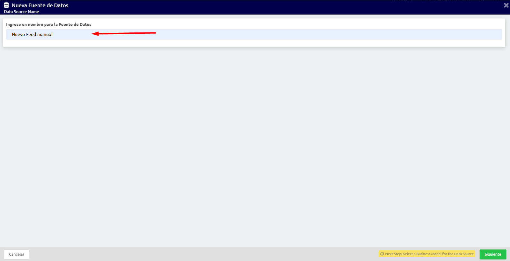
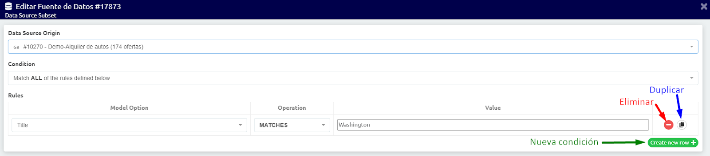

Intro
Este el panel Implementaciones > Fuentes de Datos vamos a poder agregar, modificar y editar los feed de nuestra cuenta.
En el caso de no saber que es un Feed o Fuente de datos te recomendamos ver nuestro tutorial: Todo sobre el DataSource.
Desde este panel vamos a poder crear nuevas bases de datos, imprimir en distintos formatos o imprimir la lista de las fuentes cargadas en la cuenta, ver el preview de cada fuente y acceder al menú de cada DS.
Info disponible
En la lista de base de datos vamos a poder visualizar la siguiente información:
- Id: Representa el número identificador de cada fuente.
- Nombre: Corresponde al nombre que le pusimos al momento de crearla. En el caso de desearlo este dato se puede modificar.
- Tipo: Nos indica cuál es el origen de la fuente de datos.
- Modelo: Vamos a poder ver a que Modelo de Negocio está asociado este feed.
- Países:
- URL: En el caso de estar alimentando el feed por medio de una URL, desde acá vamos a poder acceder a ella.
- Frecuencia de actualización: Desde aquí vamos a poder verificar cada cuanto tiempo se está actualizando nuestra fuente. En el caso de desearlo este dato se puede modificar.
- Última actualización: En este caso vamos a poder ver cuál fue la última fecha de actualización del feed.
- # Ofertas: En este espacio vamos a poder corroborar cuantas ofertas o productos tenemos cargado en la fuente.
- Status: Esta opción nos va a permitir prender y apagar la base de datos. Al tenerla apagada, esta se deja de mostrar en los banner y se deja de actualizar.
Menú
Desde menú de cada fuente vamos a poder:
- Cambiarle el nombre a la DS.
📌 Tutorial relacionado: ¿Cómo modificar el nombre de mi base de datos? - Editar el feed.
- Descargar el feed seleccionado.
- Duplicar el feed.
📌 Tutorial relacionado: ¿Cómo duplicar mi feed? - Actualizar la base de datos.
📌 Tutorial relacionado: ¿Cómo actualizar la base de datos? - Eliminar la fuente seleccionada.
📌 Tutorial relacionado: ¿Cómo eliminar una base de datos?
Intro
La Data Source, Base de Datos o feed es el medio por el que se le proporciona a los banners la información de las ofertas o productos de la web.
Para todas las fuentes de datos hay 3 campos que son obligatorios para cada oferta, estos son esenciales para que el banner pueda funcionar correctamente:
- País: se refiere al país en el que los anuncios se publicarán (no necesariamente el país de donde es la oferta). Debe insertarse con la nomenclatura correcta (ver el documento correspondiente Especificación de Fuente de Datos para más detalles). Si se establece correctamente, una bandera del país o los países correspondientes aparecerá al lado de la Fuente de Datos.
- Título: El título de la oferta, que va a identificarla.
- Enlace de Destino: donde los usuarios llegarán después de hacer clic en la oferta en el banner. Le recomendamos no añadir el rastreo a la url del enlace destino y configurarlo desde los banners. Esto le permitirá utilizar la misma Fuente de Datos en diferentes campañas.
👀 Tenga en cuenta que cuanto más completo este su fuente de datos, nuestro motor va a tener más información con la que trabajar y, a raíz de esto, se podrá obtener un mayor provecho de la optimización de nuestro servicio.
Tipos de DataSource o Feeds
Hay 4 tipos diferentes de feeds que se pueden integrar en la interfaz GroovinAds:
-
Desde un archivo XML o CSV: Seleccione esta opción si ya tiene un XML o CSV, y hay que traducirlo para que coincida con las especificaciones GroovinAds. Puede agregar valores fijos para el XML, como país (donde las ofertas correrán) y la moneda.
👀Atención: Al subir un archivo hay que tener en cuenta que este documento debe actualizarse regularmente.
📌Tutorial relacionado: ¿Cómo crear un DataSource con un archivo XML o CSV? -
Desde una URL: Podemos seleccionar una URL con un archivo XML o CSV. Este estilo de feed se actualizará automáticamente y al igual que en el punto anterior es necesario configurado para que los datos en el macheen con los solicitados por el panel.
📌Tutorial relacionado: ¿Cómo crear un DataSource desde una URL? -
Feed Manual: Seleccione esta opción si va a agregar manualmente cada oferta que será parte de la base de datos de opciones para sus banners, a través de un formulario online.
👀Atención: Al subir los productos manualmente, la actualización de los mismos también se realiza manualmente.
📌Tutorial relacionado: ¿Cómo crear un Feed Manual? -
Site Crawler: Esta opción está disponible para cuando no se puede crear un XML,o se tiene demasiadas ofertas y / o la frecuencia de actualización no posibilita un XML Manual. Esto creará un XML con la información disponible en la web.
📌Tutorial relacionado: ¿Cómo crear un Crawler?
A partir de ellos se puede crear subset según los criterios que se necesite.
📌 Tutoriales relacionados:
Intro
Dentro de este menú al que accedemos dentro del menú Implementaciones - Fuente de datos, presionamos el botón Nueva Fuente de Datos y completamos un nombre para la nueva Fuente de Datos, también denominada comúnmente Feed. Luego seleccionamos el modelo de negocio de la campaña que estamos emprendiendo (Retail o venta por menor, Hoteles, Automotores, etc.)
Hay varias opciones para usar de origen de una fuente de datos:
- Opción 1: Cargar un archivo XML o CSV
- Opción 2: Cargar desde una URL
- Opción 3: Alimentación manual
- Opción 4: Rastreador del sitio (crawling)
- Opción 5: Subset Data Source
Opción 1: Cargar un archivo XML o CSV
Seleccionamos el archivo para levantar en la plataforma. Luego se abrirá una pantalla para hacer un match o unir los campos que trae el feed de origen con los campos habilitados en Groovinads. Algunos de ellos ya aparecerán con el match sugerido y otros habrá que seleccionarlos manualmente.
📌Tutorial relacionado: ¿Cómo crear un DataSource con un archivo XML o CSV?
Opción 2: Cargar desde una URL
Debemos completar el cuadro con la URL de acceso al feed comppartido. Luego se abrirá una pantalla para hacer un match o unir los campos que trae el feed de origen con los campos habilitados en Groovinads. Algunos de ellos ya aparecerán con el match sugerido y otros habrá que seleccionarlos manualmente.
📌Tutorial relacionado: ¿Cómo crear un DataSource desde una URL?
Opción 3: Alimentación manual
Completar los campos desde la pantalla que se abre a tal efecto. Los campos que no se usan o no son obligatorios pueden quedar en blanco (sin completar).
📌Tutorial relacionado: ¿Cómo crear un Feed Manual?
Opción 4: Rastreador del sitio (crawling)
Esta opción es realizada por personal técnico de Groovinads. Una vez que está instalado el pixel de retargeting en el sitio web del anunciante puede armarse un feed automático, pero el proceso debe solicitarse al contacto habitual de Groovinads.
📌Tutorial relacionado: ¿Cómo crear feed con el Crawler?
Opción 5: Subset Data Source
Un subset es un subconjunto de una fuente de datos ya existente. Debemos seleccionar el origen y luego el criterio para combinar las condiciones AND u OR. La condición AND significa que deben cumplirse todas los criterios del filtro, en cambio la condición OR muestra registros cuando se cumple al menos uno de los filtros configurados. Para configurar los filtros primero debe seleccionarse un campo (category_name, title o cualquier otro campo), luego el operador (is ANY of, is NONE of, MATCHES, GREATER than, etc.), y por último el valor. Se pueden agregar todas condiciones necesarias.
👀 Atención: No es posible combinar condiciones AND y OR en un mismo subset.
👀 Importante: Un mismo campo de Groovinads no puede quedar haciendo match con dos campos del feed de origen, la relación tiene que ser de uno a uno. Debe seleccionarse como campo product_sku aquel que contenga un id o código que permita identificar en forma unívoca a cada registro del feed. Los campos obligatorios son country, product_sku, target_link y title.
📌Tutorial relacionado: ¿Cómo crear un subset?
Paso 1
Desde el menú Implementaciones > Fuente de datos vamos a hacer clic en el botón “Nueva Fuente de Datos”.

Paso 2
Se abrirá una nueva ventana donde deberá ingresar un nombre para su fuente de datos (DS).
👀 Este es un campo obligatorio y como puede tener tantas fuentes de datos como desee, el nombre debe ser único.

Paso 3
A continuación vamos a poder elegir el modelo de negocio (BM) para su DS. Esto permitirá una mejor optimización de anuncios, estableciendo los criterios de segmentación y obteniendo mejores resultados para la campaña.

👀 Atención: Si tiene alguna duda sobre qué BM elegir, seleccione Genérico o comuníquese con el Soporte de GroovinAds para obtener orientación.
Paso 4
En este caso vamos a poder seleccionar el origen de nuestra nueva fuente. En esta oportunidad, debemos seleccionar la primer opción: “Sube un archivo XML o CSV”.
Paso 5
Al seleccionar esta opción se habilitará un botón desde el que vamos a poder elegir el archivo que queremos subir.
Paso 6
Una vez que haya seleccionado el archivo y el sistema los haya cargado, podrá hacer coincidir los campos de las ofertas con los campos estándar de GroovinAds. (Consulte las Especificaciones de DS para ver la lista de campos obligatorios y opcionales para el BM seleccionado).

📌 Tutorial relacionado: ¿Cómo hacer coincidir los valores de mi Fuente de datos con los campos estándar de Groovin?
Paso 7
Continuando con la configuración vamos a poder tener la opción de forzar los datos de nuestra DS. ¿Qué quiere decir esto? En el caso de que por ejemplo tenga el campo “Discount” configurado con el porcentaje de descuento de mi producto pero no quiero que se muestre él tal como viene de la fuente puedo configurarlo desde acá.
Tener en cuenta que si por ejemplo coloco la palabra “Oportunidad” en este espacio este dato va a aparecer en TODAS las creatividades que estén utilizando esta DS.
Al mismo tiempo, si este campo ya tenía configurado un ancho, tipografía, tamaño, etc, este no se va a adaptar automáticamente por lo cual, si el espacio es menor al que necesita puede que la leyenda no se vea correctamente.

Paso 8
Ya finalizando la configuración de nuestra nueva Fuente de datos vamos a poder una tasa de actualización para asegurarse de que las ofertas que se muestran en el banner estén siempre frescas y actualizadas. Esta tasa de actualización se puede configurar cada 30 minutos, hasta una vez al mes.

Paso 9
Una vez configurados estos puntos, ya está todo listo para poder utilizar nuestro nuevo feed en la cuenta.
👀 Atención: Recuerde que este tipo de fuente no se actualiza automáticamente por lo cual es necesario que cada vez que necesite hacer ajuste suba un nuevo archivo subiendo los datos actualizados.
📌 Tutorial relacionado: ¿Cómo actualizar mi feed desde un archivo XML o CSV?
Paso 1
Desde el menú Implementaciones > Fuente de datos vamos a hacer clic en el botón “Nueva Fuente de Datos”.

Paso 2
Se abrirá una nueva ventana donde deberá ingresar un nombre para su fuente de datos (DS).
👀 Este es un campo obligatorio y como puede tener tantas fuentes de datos como desee, el nombre debe ser único.
Paso 3
En el siguiente paso vamos a poder elegir el modelo de negocio (BM) para su DS. Esto permitirá una mejor optimización de anuncios, estableciendo los criterios de segmentación y obteniendo mejores resultados para la campaña.

👀 Atención: Si tiene alguna duda sobre qué BM elegir, seleccione Genérico o comuníquese con el Soporte de GroovinAds para obtener orientación.
Paso 4
En este paso vamos a poder seleccionar el origen de nuestra nueva fuente. En este caso, debemos seleccionar la segunda opción: “Subir desde URL”.
Paso 5
Al seleccionar esta opción se habilitará un nuevo campo donde podremos ingresar la URL.
Paso 6
Una vez que haya ingresado la URL, podrá hacer coincidir los campos de las ofertas con los campos estándar de GroovinAds. (Consulte las Especificaciones de DS para ver la lista de campos obligatorios y opcionales para el BM seleccionado).
📌 Tutorial relacionado: ¿Cómo hacer coincidir los valores de mi Fuente de datos con los campos estándar de Groovin?
Paso 7
Continuando con la configuración vamos a poder tener la opción de forzar los datos de nuestra DS. ¿Qué quiere decir esto? En el caso de que por ejemplo tenga el campo “Discount” configurado con el porcentaje de descuento de mi producto pero no quiero que se muestre él tal como viene de la fuente puedo configurarlo desde acá.
Tener en cuenta que si por ejemplo coloco la palabra “Oportunidad” en este espacio este dato va a aparecer en TODAS las creatividades que estén utilizando esta DS.
Al mismo tiempo, si este campo ya tenía configurado un ancho, tipografía, tamaño, etc, este no se va a adaptar automáticamente por lo cual, si el espacio es menor al que necesita puede que la leyenda no se vea correctamente.

Paso 8
Ya finalizando la configuración de nuestra nueva Fuente de datos vamos a poder una tasa de actualización para asegurarse de que las ofertas que se muestran en el banner estén siempre frescas y actualizadas. Esta tasa de actualización se puede configurar cada 30 minutos, hasta una vez al mes.
Verifique la frecuencia con la que se actualizarán las ofertas en la URL especificada para determinar la mejor frecuencia de actualización para su DS.
Paso 9
Una vez configurados estos puntos, ya está todo listo para poder utilizar nuestro nuevo feed en la cuenta.
Paso 1
Desde el menú Implementaciones > Fuente de datos vamos a hacer clic en el botón “Nueva Fuente de Datos”.
Paso 2
Se abrirá una nueva ventana donde deberá ingresar un nombre para su fuente de datos (DS).
👀 Este es un campo obligatorio y como puede tener tantas fuentes de datos como desee, el nombre debe ser único.
Paso 3
En el siguiente paso vamos a poder elegir el modelo de negocio (BM) para su DS. Esto permitirá una mejor optimización de anuncios, estableciendo los criterios de segmentación y obteniendo mejores resultados para la campaña.
👀 Atención: Si tiene alguna duda sobre qué BM elegir, seleccione Genérico o comuníquese con el Soporte de GroovinAds para obtener orientación.
Paso 4
En este paso vamos a poder seleccionar el origen de nuestra nueva fuente. En este caso, debemos seleccionar la tercera opción: “Feed manual”.
Paso 5
Al avanzar con la configuración nos va a aparecer una nueva ventana con un formulario en el que debemos ingresar todos los datos de nuestro producto.
👀 Atención: Tenga en cuenta que los valores País (country), Título (title) y Enlace de Destino (target_link) son campos obligatorios.
También recuerde que cuanto más completo este su fuente de datos, nuestro motor va a tener más información con la que trabajar y, a raíz de esto, se podrá obtener un mayor provecho de la optimización de nuestro servicio.
Paso 6
Una vez completada toda la información de nuestro primer producto hacemos clic en el botón “Save row”.
Paso 7
De esta manera, cargamos nuestro primer producto. Si deseamos subir otro, debemos hacer clic en el botón “Create new row” y completar el formulario con la información del nuevo producto.
Paso 8
Una vez que hayamos cargado todos los productos que deseábamos, hacemos clic en el botón “Siguiente”. Con esto terminamos de configurar el nuevo feed.

👀 Atención: Recuerde que este tipo de fuente no se actualiza automáticamente por lo cual es necesario que realice los ajustes manualmente cada vez que sea necesario.
📌Tutorial relacionado: ¿Cómo actualizar mi feed manual?
Esta opción está disponible cuando no se tiene disponible un archivo o un link con los productos que deseamos promocionar. En estos casos, una vez que ya se realizó la instalación del pixel de retargeting en el sitio web, se puede solicitar al equipo de Groovin el armado de un feed automático.
El crawler es generado directa y estrictamente por personal técnico de GroovinAds.
Un Subset es una herramienta del panel que nos permite crear una nueva base de datos desde un feed ya existente.
¿Para qué podemos utilizar un subset? Estos nos pueden ser muy útiles cuando solo queremos publicitar productos con una o más condiciones. Por ejemplo, si vendo electrodomésticos y tengo una promo solo en batidoras, voy a poder armar un subset donde solo estén las batidoras.
📌Tutorial relacionado: ¿Cómo crear un subset?
Paso 1
👀 Atención: Un subset es un subconjunto de una fuente de datos ya existente. Por lo cual para poder crear uno es necesario tener un feed ya cargado en nuestra cuenta.
Para crear el subset vamos a seguir los siguientes pasos:
Desde el menú Implementaciones > Fuente de datos vamos a hacer clic en el botón “Nueva Fuente de Datos”.

Paso 2
Se abrirá una nueva ventana donde deberá ingresar un nombre para su fuente de datos (DS).
👀 Este es un campo obligatorio y como puede tener tantas fuentes de datos como desee, el nombre debe ser único.

Paso 3
En el siguiente paso vamos a poder elegir el modelo de negocio (BM) para su DS. Esto permitirá una mejor optimización de anuncios, estableciendo los criterios de segmentación y obteniendo mejores resultados para la campaña.

👀 Atención: Si tiene alguna duda sobre qué BM elegir, seleccione Genérico o comuníquese con el Soporte de GroovinAds para obtener orientación.
Paso 4
En este paso vamos a poder seleccionar el origen de nuestra nueva fuente. En este caso, debemos seleccionar la quinta opción: “Subconjunto de la Fuente de Datos”.
Paso 5
Al avanzar con la configuración nos va a aparecer una nueva ventana donde vamos a poder seleccionar la Fuente desde la que queremos armar el nuevo feed y las condiciones que deben cumplir nuestros productos para estar en el.
Paso 6
En el desplegable de Data Source Origin vamos a seleccionar la fuente desde la que vamos a armar el subset.
Paso 7
Luego en Condition vamos a definir si un producto debe cumplir con todas las condiciones que creemos para incluirlo en este nuevo feed (Match ALL of the rules defined below) o si con cumplir alguna de ellas ya esta (Match ANY of the rules defined below).
Paso 8
Una vez especificado esto, podemos avanzar con la configuración de las condiciones. Para esto vamos a ir agregando de a una, creándolas desde el botón “Create new row”.
Al hacer clic en el botón nos van a aparecer dos campos para completar:
-
Model Option: En este espacio vamos a poder seleccionar el campo que queremos comparar. Por ejemplo, Título, Precio, País, etc.
👀 Tener en cuenta que este campo tiene que existir en el feed original. - Operation: En este caso vamos a seleccionar que es lo que estamos buscando. Un valor igual (MATCHES), distinto (DOES NOT MATCH), mayor (GREATER than), menor (LESS than), que conténtenla algo (is ANY of) o que no contenga nada (is NONE of).
- Value: Vamos a poder cargar el valor que deseamos que cumpla.
Paso 9
Luego, y en el caso de necesitarlo, vamos a poder crear nuevas condiciones y duplicar o eliminar las condiciones que existentes cuando lo deseemos solo con un clic.
Paso 10
Una vez que hayamos cargado todas las condiciones que necesitemos debemos hacer clic en el botón “Actualizar”.
Paso 11
Con esto se realiza la búsqueda, devolviéndonos los productos que cumplen con las condiciones establecidas.
Paso 12
Hacemos clic en el botón “Next” y continuando con la configuración vamos a poder tener la opción de forzar los datos de nuestra DS. ¿Qué quiere decir esto? En el caso de que por ejemplo tenga el campo “Discount” configurado con el porcentaje de descuento de mi producto pero no quiero que se muestre él tal como viene de la fuente puedo configurarlo desde acá.
Tener en cuenta que si por ejemplo coloco la palabra “Oportunidad” en este espacio este dato va a aparecer en TODAS las creatividades que estén utilizando esta DS.
Al mismo tiempo, si este campo ya tenía configurado un ancho, tipografía, tamaño, etc, este no se va a adaptar automáticamente por lo cual, si el espacio es menor al que necesita puede que la leyenda no se vea correctamente.

Paso 13
Por últimos guardamos el feed haciendo clic en “Save” y ya está todo listo para poder utilizar nueva base de datos.
👀 Atención: Recuerde que este tipo de fuente se actualiza según lo configurado en la fuente original. Por lo cual es necesario que la fuente de la que estamos tomando estos datos esté siempre actualizada.
Paso 1
Vamos a ingresar al menú Implementaciones > Fuentes de Datos. Desde allí vamos a buscar el feed que deseamos editar y hacemos clic en el icono de menú. En el menú desplegable vamos a seleccionar la opción “Editar”.
Paso 2
Buscamos el producto a modificar y hacemos clic en el icono de menú. Se abrirá nuevamente un menú desplegable donde vamos a hacer clic en la opción “Editar”.
Paso 3
Vamos a poder visualizar una nueva ventana con el formulario que completamos al crear nuestro producto. Desde aquí vamos a poder sumar, modificar o eliminar toda la información que necesitemos.
Paso 4
Una vez actualizados los datos necesarios, vamos a hacer clic en el botón “Save row” para guardar los cambios.
Paso 5
En el caso de querer editar algún otro producto se hace el cambio siguiendo los mismos pasos y al terminar hacemos clic en el botón “Siguiente”, dando por finalizada las modificaciones en el feed.
Paso 1
Vamos a ingresar al menú Implementaciones > Fuentes de Datos. Desde allí vamos a buscar el feed que deseamos editar y hacemos clic en el icono de menú. En el menú desplegable vamos a seleccionar la opción “Editar”.

Paso 2
Se va a abrir la misma ventana donde configuramos por primera vez las condiciones. Allí vamos a poder sumar, eliminar y editar las condiciones de búsqueda de los productos que deseamos incluir en el feed.
Paso 3
Una vez que hayamos realizado todos los cambios que necesitabamos debemos hacer clic en el botón “Actualizar”.
Paso 4
Con esto se realiza la búsqueda, devolviéndonos los productos que cumplen con las condiciones establecidas.
Paso 5
Al avanzar de pantalla nos da la posibilidad de forzar algún dato al igual que cuando creamos la fuente.
Una vez que estemos listos para guardar el feed hacemos clic en “Save” y nuestra base de datos ya habrá quedado actualizada.
Paso 1
Vamos a poder modificar el nombre de nuestro feed desde el menú Implementaciones > Fuentes de Datos haciendo clic en el botón de menú de la DataSource a renombrar.
Paso 2
Seleccionamos la opcion “Rename”.
Paso 3
Se va a abrir una nueva ventana donde podremos modificar el nombre del Feed.
Una vez que hayamos renombrado el archivo, debemos hacer clic en el boton "Guardar" y listo!
Nuestra Fuente de Datos ya tendrá su nuevo nombre.
Paso 1
Vamos a poder duplicar nuestro feed desde el menú Implementaciones > Fuentes de Datos haciendo clic en el botón de menú de la DataSource.

Paso 2
Al desplegarse el menú seleccionamos la opción “Duplicar”.
Paso 3
Al hacer esto, el panel generará un duplicado de su base de datos.
A este nuevo feed va a poder editarle el nombre siguiendo los pasos de nuestro tutorial:
Intro
Desde la opción de Actualizar vamos a poder forzar la actualización de los datos de nuestro feed sin la necesidad de esperar al próximo horario programado de sincronización.
¿Para qué nos puede servir esta opción?
Esta opción está pensada para ocasiones en los cuales se modifica la fuente que alimenta el feed del panel y necesitamos que los cambios se reflejen inmediatamente. Por ejemplos, frente a la implementación de nuevos precios de descuentos al comienzo de un evento tal como el Hot Sale.
Paso 1
Esto lo vamos a poder realizar desde el menú Implementaciones > Fuentes de Datos haciendo clic en el botón de menú de la DataSource.

Paso 2
Al desplegarse el menú seleccionamos la opción “Actualizar“:
Al hacer clic en este botón, el sistema se vinculará al medio por el cual se subió el feed (URL, Crawling o subset) y actualizará los datos del panel.
Paso 1
Vamos a poder eliminar nuestros feed desde el menú Implementaciones > Fuentes de Datos haciendo clic en el botón de menú de la DataSource.

Paso 2
👀 Atención: Tener en cuenta que una vez eliminada la base de datos no se puede recuperar.
Al desplegarse el menú seleccionamos la opción “Borrar”.

Paso 3
Se abrirá una nueva ventana donde deberemos confirmar o no la acción:
Al hacer clic en OK, la Data Source será eliminada definitivamente de la cuenta.
Intro
Cuando cargamos una nueva base de datos por medio de una URL o desde un archivo XML o CSV debemos configurar las columnas de tal forma que macheen con los datos que el panel necesita. De lo contrario, puede que se muestre valores vacíos o incorrectos en las creatividades.
Al cargar el origen del nuevo feed nos va a parecer la siguiente ventana. Donde vamos a poder ver en verde los campos que se machearon y en rojo los que no.
Paso 1
Lo que primero debemos corroborar es que los campos en verde se vincularon correctamente.
Si bien el sistema funciona comparando el nombre de la columna de origen con la requerida de Groovin lo cual previene errores, podría suceder que si cargamos los links destino en la columna “URL” el sistema la vincule este dato a Brand Logo URL cuando en realidad corresponde target_link. Por situaciones como esta siempre recomendamos verificar los datos.
Paso 2
En todos los casos contamos con las siguientes opciones:
-
Editar: Nos permite modificar el campo con el cual se vinculó el campo en cuestión.
Al hacer click en esta opción, vamos a poder contar con un desplegable donde seleccionar el Groo valor correspondiente para esa columna.
El cambio se va a poder guardar haciendo clic en Guardad o en caso de no querer hacer cambios cliqueamos el Cancelar. - Unset: Nos permite desvincular el campo al Groo valor asociado.
Paso 3
Una vez hayamos vinculado todos los campos que seamos y los requeridos por el sistema debemos verificar que el país este configurado correctamente.
Si esta todo ok podemos avanzar al siguiente paso desde el botón “Siguiente”.